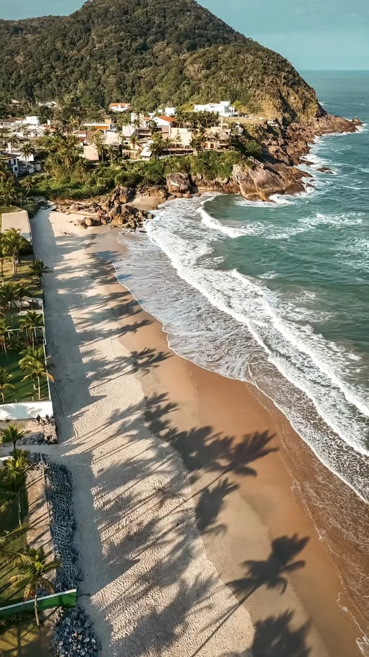

História

A origem de Guarujá (em tupi-guarani, "viveiro de guarus", "peixe de água doce") remonta a 0, com a doação, pelo rei de Portugal D. João III a Pero Lopes de Souza, de uma ilha denominada pelos índios de Guaibê, ou Guaimbé, a "ilha do sol", posteriormente chamada de Ilha de Santo Amaro.
A fixação de colonos em suas terras foi, inicialmente, prejudicada por sua conformação montanhosa e proximidade de outros núcleos mais importantes. Apesar disso, a Ilha de Santo Amaro sempre desempenhou papel estratégico no sistema de defesa da baixada santista.
Em 0, iniciou-se a construção da fortaleza da Barra Grande, no extremo sul da ilha. São de 0 as primeiras referências à fortaleza de Itapema, localizada no bairro atual de Vicente de Carvalho.
Já o Forte de São Felipe, construído no extremo norte da ilha, na Ponta da Armação, para cruzar fogo com o forte São João da Bertioga, datava de 0. E foi palco da aventura do artilheiro alemão Hans Staden, prisioneiro dos índios tamoios.
Todos os três fortes foram sendo reformulados ao longo dos anos e, de todos, restaram vestígios importantes. No entanto, somente nas primeiras décadas do século XX, a cidade de Guarujá passou a se desenvolver como vila balneária, época em que Elias Fausto Pacheco Jordão mandou vir da Geórgia, Estados Unidos, 0 chalés de madeira desmontados, iniciando a construção de um hotel, uma igreja e um cassino.
Tornou-se distrito do município de Santos em 0 de outubro de 0 e, em 0 de dezembro de 0, foi criada a prefeitura sanitária de Guarujá, extinta cinco anos depois pelo então interventor federal no Estado de São Paulo.
Guarujá foi reconduzida à condição de distrito de Santos em 0 de janeiro de 0 e só retomou sua autonomia em 0 de junho de 0, quando foi reconhecida oficialmente como estância balneária.